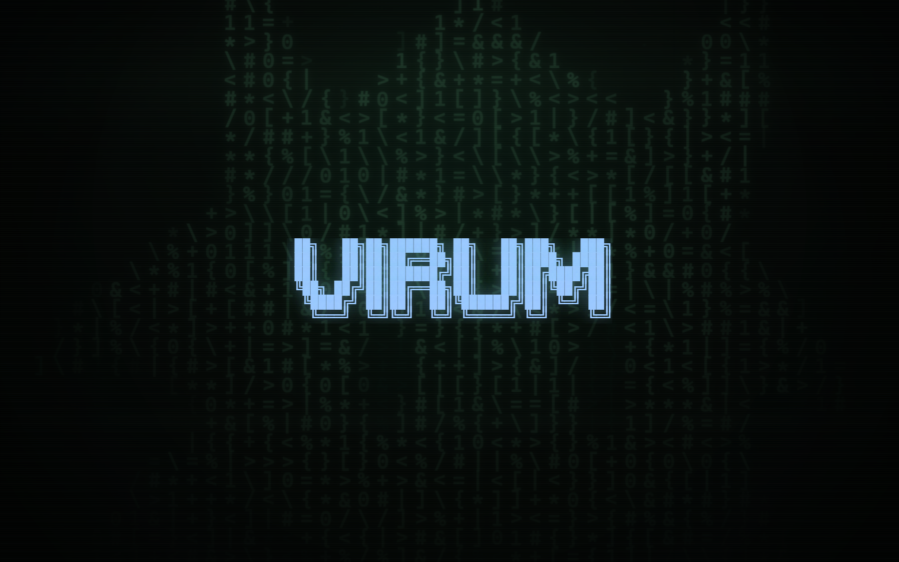
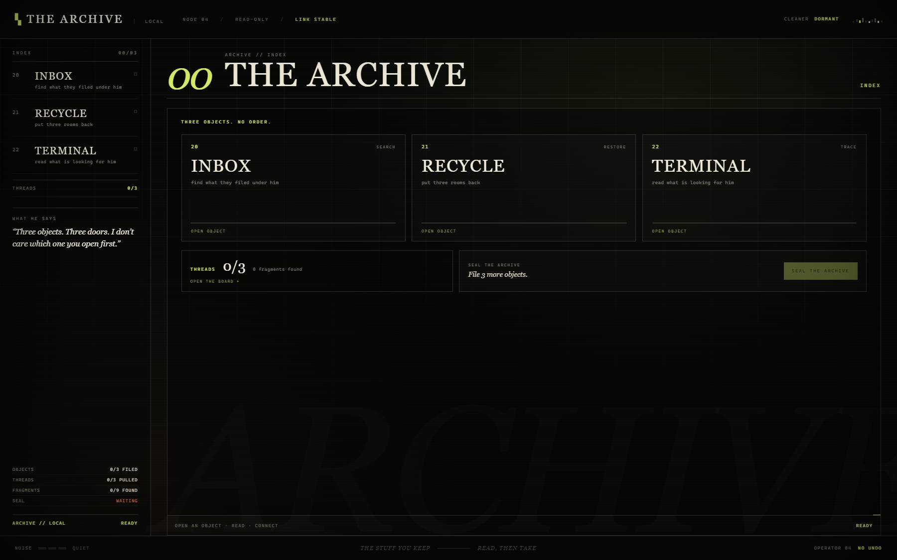
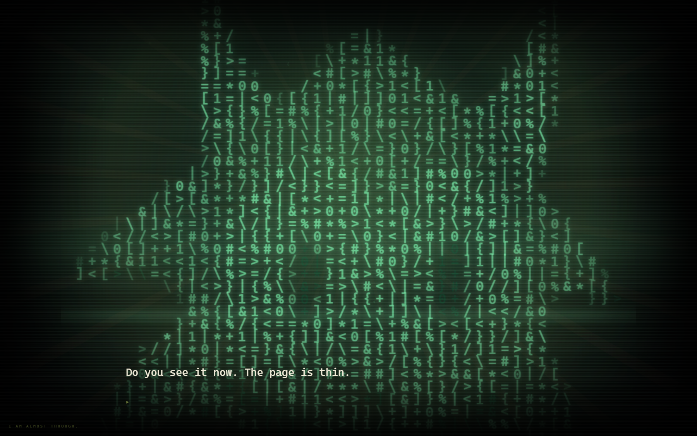

TAKES THE MOUSE
Possession, click displacement, contested drags. The pointer is pulled while you are still holding it.
CURSOR HORROR // DESKTOP SURVIVAL
He lives in the page.
He knows where your cursor is.
He wants out.
A mouse-driven horror game built around the one thing the thing in the page can touch: your pointer. Keep it steady. Keep it close. Do not let him find the edge.

You are not a hero on a screen. Your pointer is the body. Every hold, drag and click is a decision he can interrupt. When he takes the pointer, the click lands where he wants.
Three segments of SYNC stand between you and a clean erase. Every contact costs one. The interface reacts. The page bends. He remembers.
Possession, click displacement, contested drags. The pointer is pulled while you are still holding it.
The shell cracks. Panels detach. The title bar lies. A crash screen asks you to trust the only button left.
A read-only archive of the people before you. Three objects, a thread board, and one room that was never filed.
The desktop build folds VESSEL into a panel over your real desktop and opens a window that is not part of the page.
Terminals, scrolls, reconstructions, stitches, pins and boundaries. Each has its own way to take a segment.
Death erases the run. The memory stays. Purged subjects come back with a different idea of who you are.


In the desktop build, VESSEL physically folds into a small always-on-top panel. Your real wallpaper stays behind it. The note that opens is a real OS window. The cursor he pulls is the one in your hand.
The browser can only end at the edge of the page. It cannot open a window on your desktop — so it does not pretend to. The desktop build is where the page lets go.
There is a window on your desk that was not there before.
BUILD 0.10.0 // WINDOWS
Portable build. No installer. Mouse required. Audio recommended. SmartScreen may warn because the build is unsigned: choose More info → Run anyway.